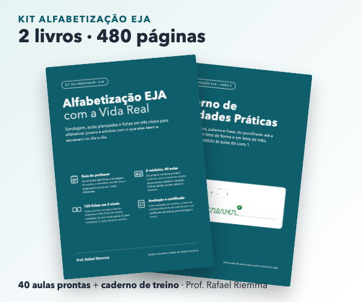
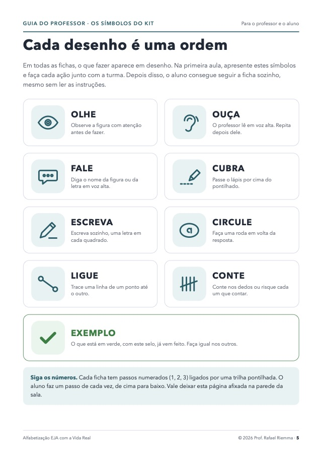
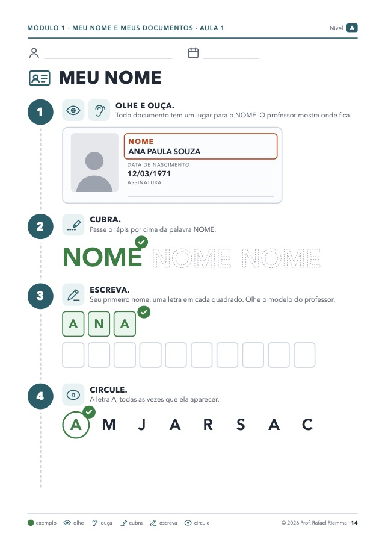
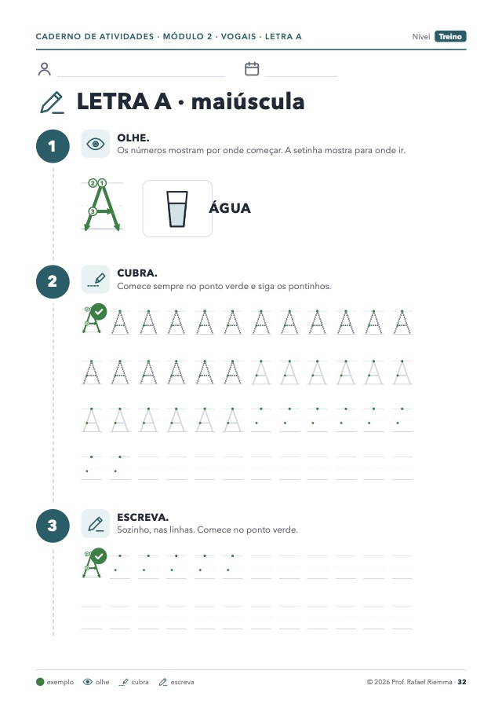
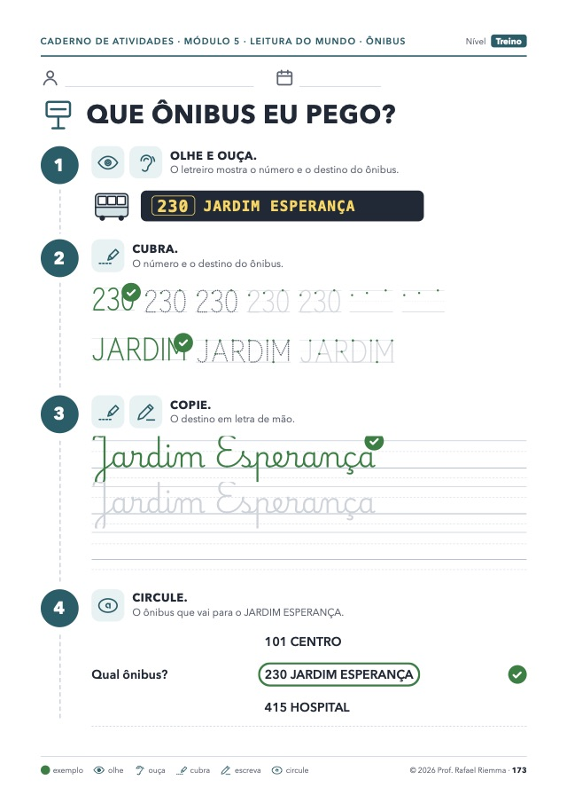
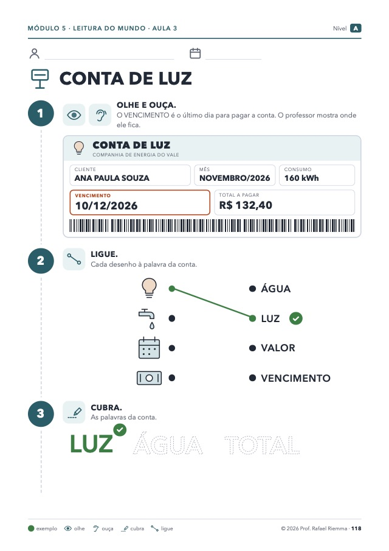
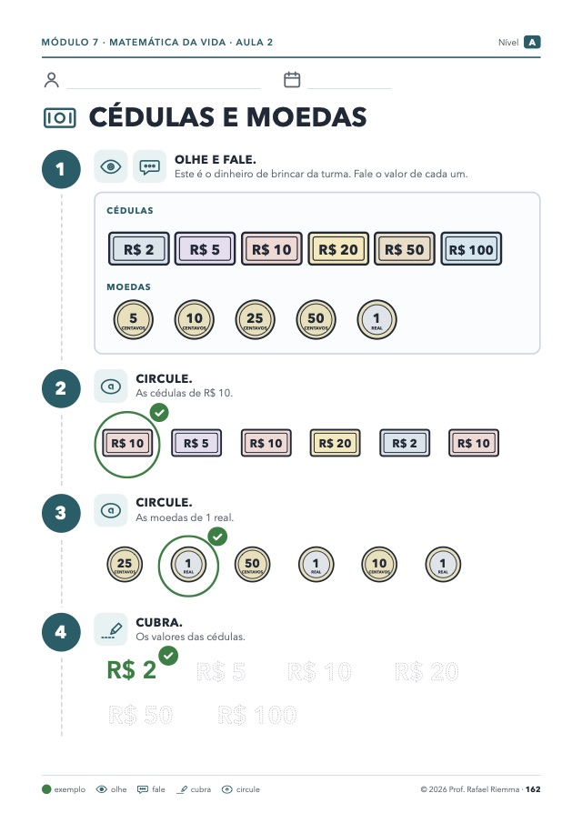
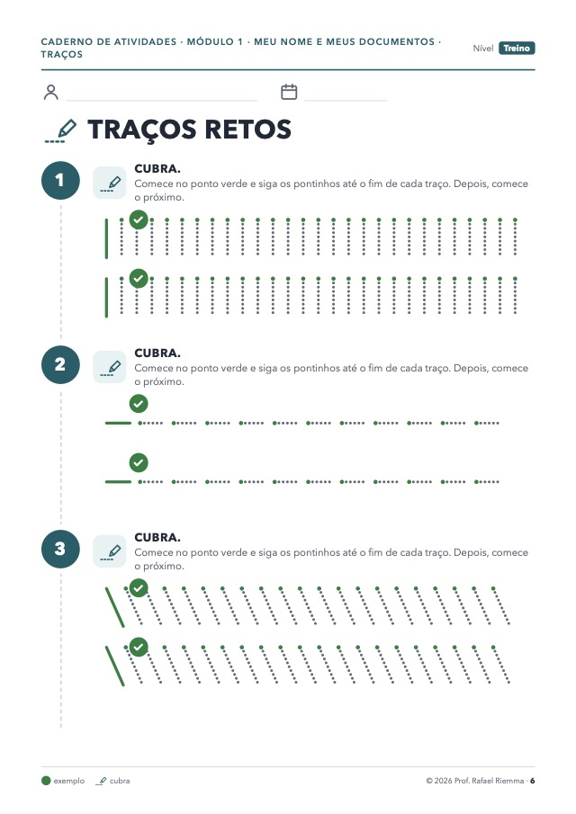

Responda 4 perguntas rápidas e veja como ensinar com aulas prontas e um caderno de treino que o aluno consegue seguir mesmo sem saber ler.

Quem você vai alfabetizar?
Como está a escrita hoje?
O que mais atrapalha hoje?
Com que frequência vocês estudam?
Montando o caminho para o seu aluno…
✔ Ponto de partida pela fase da escrita
✔ Atividades com temas da vida adulta
✔ Treino de mão, da letra até a frase
O seu caminho está pronto
Alfabetizar um adulto é diferente. Este kit foi feito para isso.
Livro 1 · Kit do professor (206 páginas)
40 aulas prontas em 8 módulos, cada uma com plano de aula e respostas.
120 fichas em 3 níveis do mesmo conteúdo, para a turma toda avançar junta.
Sondagem para descobrir a fase de cada aluno, 8 avaliações (uma por módulo) e certificado de avanço.
Livro 2 · Caderno de Atividades Práticas (274 páginas)
Treino de mão: traços, letra de forma com a ordem dos traços e letra de mão (cursiva).
Da letra à frase: palavras, sílabas, frases e textos curtos.
Dia a dia: fichas de cadastro, ônibus, mercado, conta de luz, remédio, dinheiro e horas.
Veja algumas páginas

Cada desenho é uma ordem: o aluno entende o que fazer sem ler.

O primeiro item vem feito em verde: é só fazer igual.

Letra com a ordem dos traços e o apoio diminuindo a cada linha.

Leitura do mundo: o letreiro do ônibus.

Ler a conta de luz: vencimento e valor.

Matemática da vida: cédulas, moedas e troco.

Traços para soltar a mão antes das letras.
Para quem é
Professores e alfabetizadores da EJA, da rede pública, particular ou de projetos sociais.
Quem ensina um adulto em casa ou no trabalho.
Para quem não é
Para quem procura material para crianças pequenas ou uma apostila só de teoria.
Os 2 livros, em PDF colorido e preto e branco
R$ 99
à vista no Pix, PicPay ou Google Pay, ou em até 12x no cartão (com os juros do parcelamento). A Cakto soma R$ 0,99 de taxa de serviço: à vista, o total é R$ 99,99.
Acesso imediato por e-mail e para sempre na área de membros. Você baixa os PDFs e imprime quantas vezes precisar para os seus alunos.
7 DIAS
Garantia de 7 dias. É o seu direito de arrependimento (art. 49 do Código de Defesa do Consumidor): até 7 dias depois da compra, peça o reembolso pela Cakto, pelo link do e-mail de confirmação da compra, sem precisar explicar.
Quem fez
Prof. Rafael Riemma, professor de português e redação há mais de 20 anos, criador da Plataforma Verbo. Este kit reúne o que funciona com adultos: temas da vida real, atividades que se explicam pelo desenho e muito treino de mão. No Instagram: @rriemma.
Perguntas frequentes
Como recebo o material?
Por e-mail, logo depois da confirmação do pagamento, com acesso à área de membros para baixar os PDFs.
Posso imprimir quantas vezes quiser?
Sim, para os seus alunos. A licença é individual: cada professor ou pessoa que ensina usa a sua cópia. Não pode revender nem compartilhar o arquivo.
Serve para quem ensina em casa?
Serve. As fichas guiam o aluno com símbolos e exemplos, e o caderno explica como começar, como segurar o lápis e como usar a escada de apoio.
Tem versão que gasta menos tinta?
Tem. Os dois livros vêm também em preto e branco.
O material é para criança?
Não. Os temas são de adulto: documentos, trabalho, mercado, ônibus, contas e dinheiro.